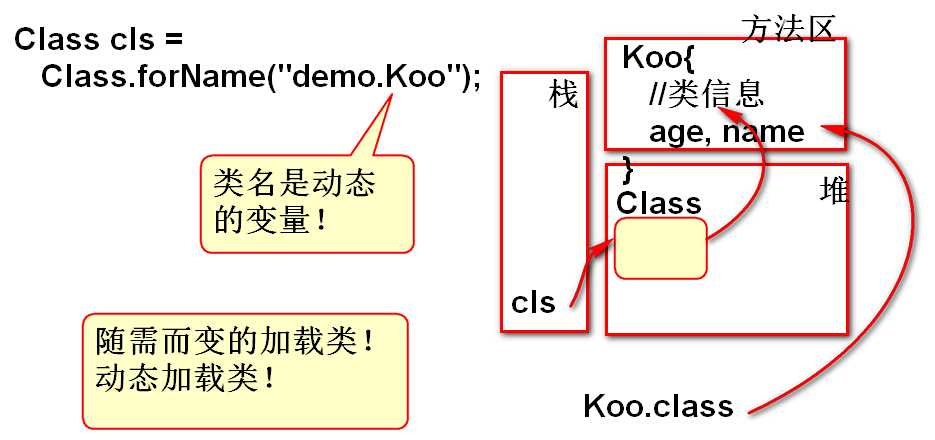
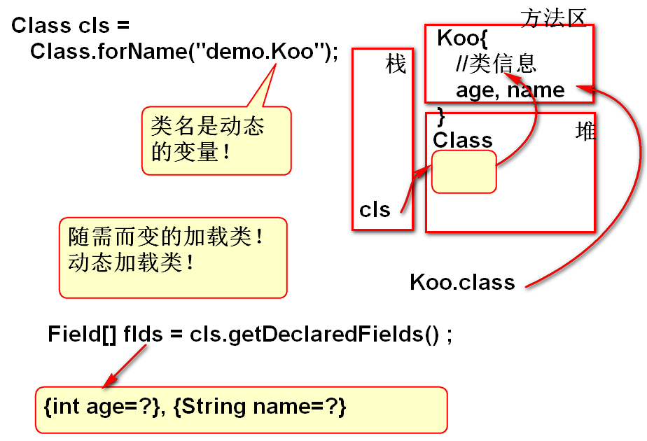

常见框架的底层都使用了反射。
是Java的动态执行机制
按部就班：静态执行
随需而变：动态执行
代码:
String str = new String("ABC");
System.out.println(str.length());
Koo k = new Koo();
k.test();
反射是Java的API， 是Java内部带来了的。

代码：
Class cls = Class.forName(类名);
案例：
Scanner in = new Scanner(System.in);
/**
* 从控制台读取被加载的类名：包名.类名
*/
String className = in.nextLine();
/**
* 从硬盘上动态加载类"类名.class"。
* 类加载到方法区，返回变量cls代表加载的
* 结果。如果类名错误，Java反射API没有
* 找到相应的类文件，就抛出:类没有找到异常
*/
Class cls = Class.forName(className);
//输出类加载的结果
System.out.println(cls);
类的信息：属性、方法、构造器...

代码
Field[] flds = cls.getDeclaredFields() ;
返回，类的属性信息（Filed 对象）
每个Filed 对象代表类中的一个属性信息
案例:
//动态加载类
String className = "demo.Koo";
Class cls = Class.forName(className);
//动态获取类的 属性信息
Field[] flds=cls.getDeclaredFields();
//flds代表类的全部属性
//Field类来自包：java.lang.reflect
//利用增强for显示全部的属性信息
for(Field f : flds){
//f 代表类的中每个属性 信息
System.out.println(f);
}
代码：
//Method来自反射包：java.lang.reflect.*
// Declared: 声明的
Method[] methods=
cls.getDeclaredMethods();
案例：
//动态加载类
String className = "demo.Koo";
Class cls = Class.forName(className);
//动态获取类信息
//Method来自反射包：java.lang.reflect.*
// Declared: 声明的
Method[] methods=
cls.getDeclaredMethods();
//利用循环输出方法信息
for(Method m : methods ){
//m 代表类的每个方法信息
System.out.println(m);
}
在运行程序之前，“不知道类名”，在运行期间动态加载类，动态创建这个类的对象。
代码：
//动态创建对象，cls引用了那个类的信息， 就创建这个类的对象！这个类必须有无参数构造器，否则将抛出异常!
cls.newInstance()
案例：
String className = "demo.Koo";
//java.io.BufferedInputStream 类没有无参数构造器
//动态加载类
Class cls = Class.forName(className);
//动态创建对象
//被创建对象的类必须有无参数构造器！
//否则将出现无此方法的异常！
Object obj = cls.newInstance();
System.out.println(obj);
Method 类提供了API方法invoke，能够执行特定的方法
代码：
m.invoke(obj, null);
在obj对象上执行m方法
m 和 obj是有关系的，obj对象上一定包含m方法，
否则执行期间将抛出异常！！！
业务问题：
执行一个类中全部的以test为开头的无参数方法。
(test开头的方法不是固定数量的方法)
需要动态识别有哪些以test为开头的方法！
此案例中的类名不是确定的，被调用的方法名不是确定的， 这种情况下执行这些方法，必须使用反射API实现。
解决方案：
案例：
//动态加载类
String className = "demo.Xoo";
Class cls = Class.forName(className);
//为了调用方法，需要先创建对象
Object obj = cls.newInstance();
//获取全部的方法信息
Method[] methods=
cls.getDeclaredMethods();
for(Method m:methods){
//System.out.println(m);
//m.setAccessible(true);“破坏了”
//原有的封装，在类的外部访问执行
// "私有方法", 使用不多！！！
m.setAccessible(true);
m.invoke(obj, null);
}
找到一个类的特定方法，并且执行这个方法
API 说明：
getDeclaredMethod(方法名, 参数类型列表)
返回值是一个特定方法信息
Class cls = ....
Method m = cls.getDeclaredMethod("add",
long.class, int.class)
//调用了有参数的方法，返回值value是方法执行的
//结果
Object value = m.invoke(obj, 5L, 5)
代码：
class Yoo{
public int add(int a, int b){
return a+b;
}
public long add(long a, int b){
return a+b;
}
}
//动态加载类
String className = "demo.Yoo";
Class cls = Class.forName(className);
//动态创建对象
Object obj = cls.newInstance();
//找到一个特定方法
Method m=cls.getDeclaredMethod(
"add", long.class, int.class);
//m 代表找到的特定方法信息。
//执行方法
Object val = m.invoke(obj, 5L, 5);
//val 代表方法的执行结果。
System.out.println(m);
System.out.println(val);
用反射实现：
用反射调用